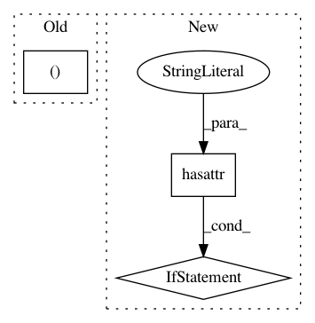

01b8f6eef41c36f12019adfc23ace2a100d77610,maml_rl/envs/sync_vector_env.py,SyncVectorEnv,__init__,#SyncVectorEnv#,6
Before Change
self.observation_space = observation_space
self.action_space = action_space
self._dones = np.zeros((self.num_envs,), dtype=np.bool_)
def seed(self, seeds=None):
if seeds is None:
After Change
action_space=action_space,
**kwargs)
for env in self.envs:
if not hasattr(env.unwrapped, "reset_task"):
raise ValueError("The environment provided is not a "
"meta-learning environment. It does not have "
"the method `reset_task` implemented.")
def reset_task(self, task):
for env in self.envs:
env.unwrapped.reset_task(task)
In pattern: SUPERPATTERN
Frequency: 3
Non-data size: 3
Instances
Project Name: tristandeleu/pytorch-maml-rl
Commit Name: 01b8f6eef41c36f12019adfc23ace2a100d77610
Time: 2019-11-24
Author: tristan.deleu@gmail.com
File Name: maml_rl/envs/sync_vector_env.py
Class Name: SyncVectorEnv
Method Name: __init__
Project Name: silvandeleemput/memcnn
Commit Name: cd0b78ae006e63220ad8828aeb69a3b8f3504be2
Time: 2019-05-28
Author: silvandeleemput@gmail.com
File Name: memcnn/data/cifar.py
Class Name:
Method Name: get_cifar_data_loaders
Project Name: lmcinnes/pynndescent
Commit Name: c1c31db36facdf8d557f4dcc69866ac86814b83f
Time: 2020-09-01
Author: leland.mcinnes@gmail.com
File Name: pynndescent/pynndescent_.py
Class Name: NNDescent
Method Name: _init_search_graph